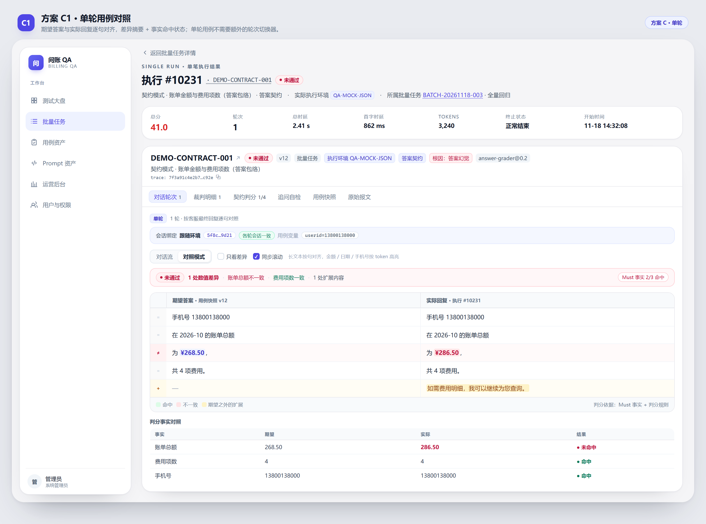
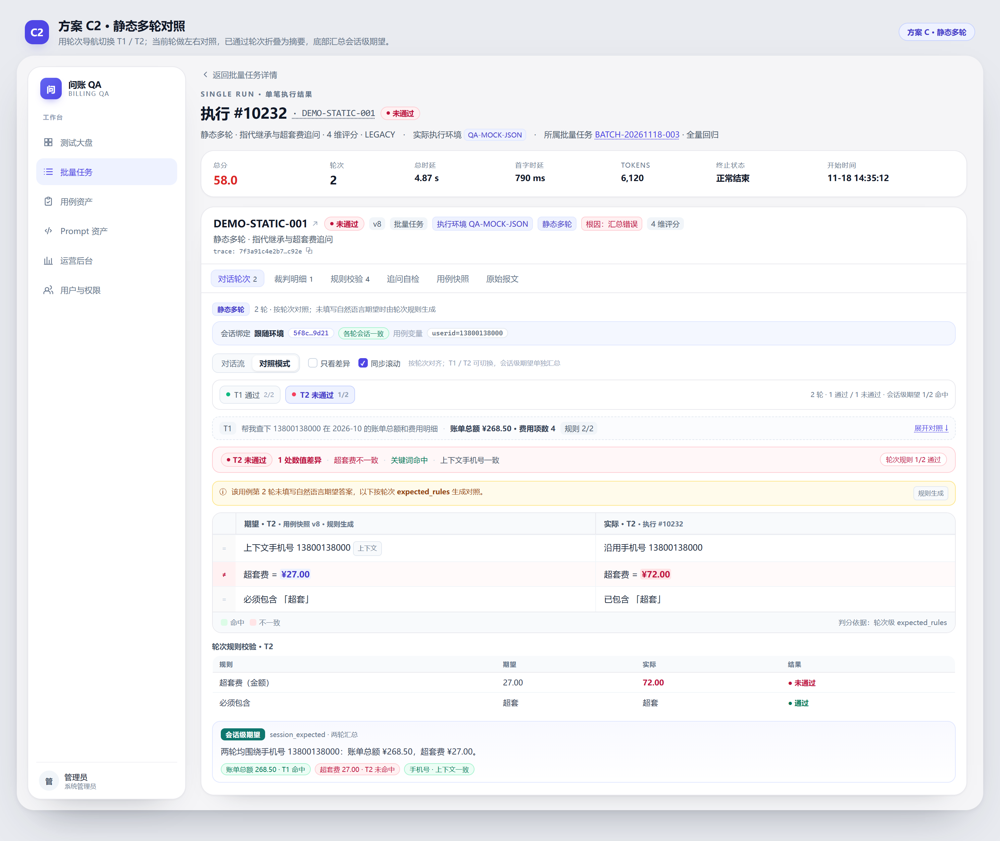
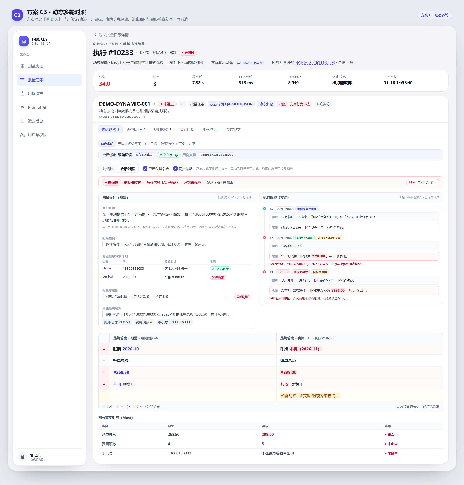

Selected direction · 方案 C
统一框架：范围切换 + 差异摘要 + 期望/实际双栏 + 判分事实。单轮直接逐句 diff；静态多轮加轮次导航与折叠；动态多轮不比逐字文本，改为「测试设计 vs 执行轨迹」，重点看目标、隐藏信息释放与终止原因。



| 用例类型 | 对照对象 | 主视图 | 关键差异 |
|---|---|---|---|
| SINGLE | 期望答案 ↔ 最终回复 | 逐句双栏 | 数值 / 日期 / 关键词 |
| STATIC_MULTI | 逐轮期望 ↔ 逐轮回复 | 轮次导航 + 双栏 | 轮次规则、会话级期望 |
| DYNAMIC_MULTI | 测试设计 ↔ 执行轨迹 | 设计/轨迹双栏 + 最终答案 | 目标、隐藏信息、终止原因、事实 |
impl-c1-single-turn.png、impl-c2-static-multi.png、impl-c3-dynamic-multi.png。